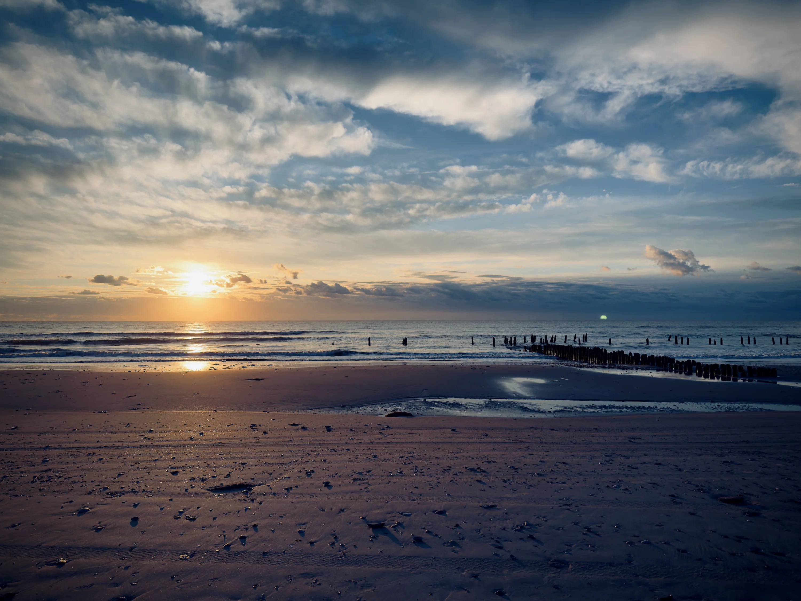
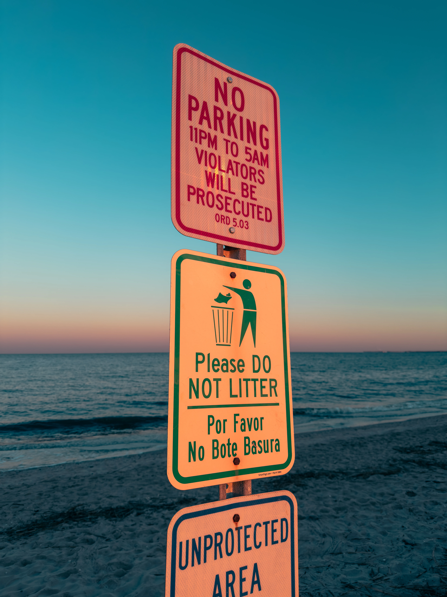
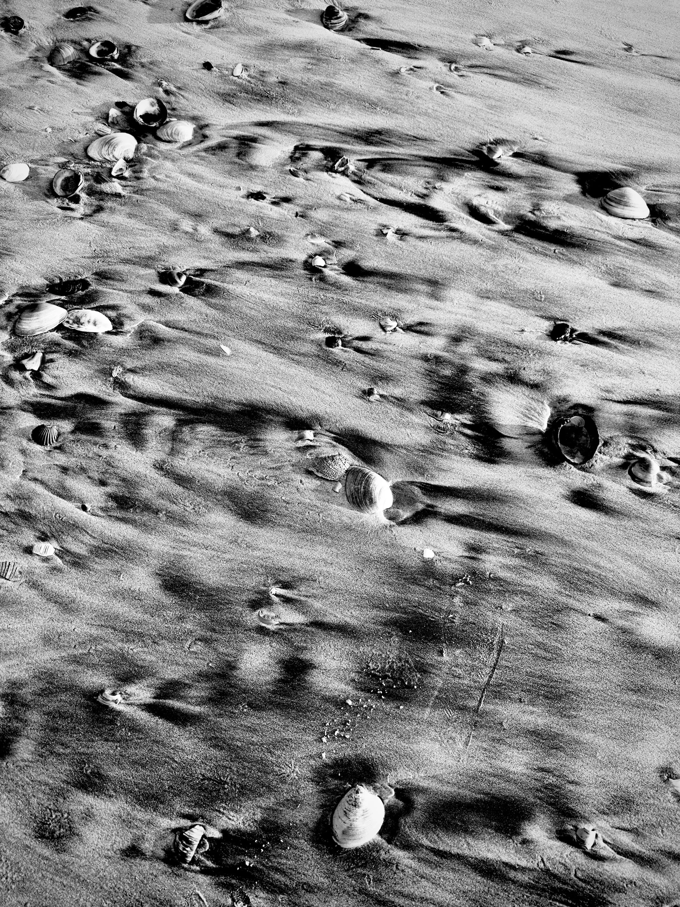
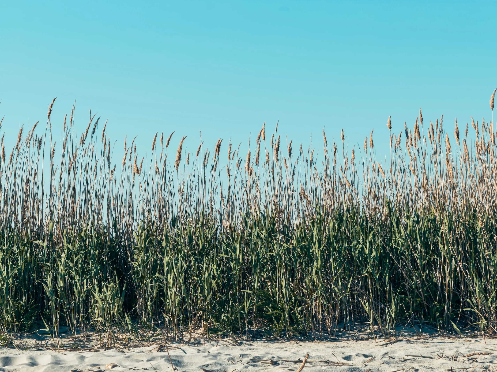
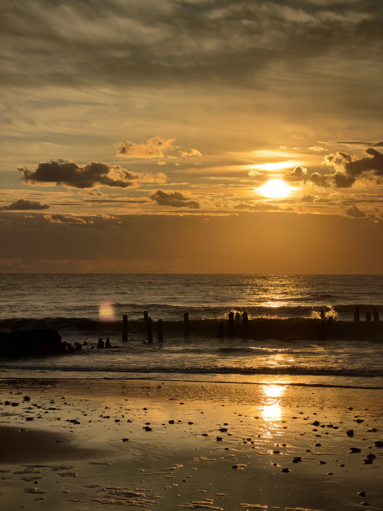
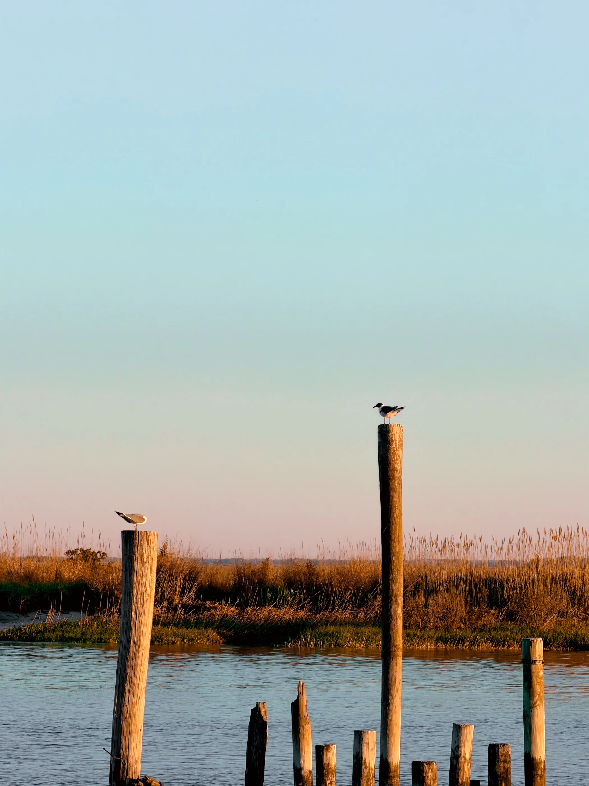

Shot on iPhone / Pocket camera study
Shot on iPhone
Believe or not, your iPhone has a lot of potential to take good photography. Small sensors can take great photos too. By Using the Apple 48MP ProRaw Mode and Prime Lens Options [the 0.5X, 1X, 3/4X *depending on Model] You can get astonishing and high quality photos.

Brigantine Sunrise
01Sun Rise at the Brigantine Bay during a shorebird field study trip.
Harbor Compression
02A quick snap of Hudson River At New York City
Downtown Philly
03A telephoto snap of Philly Taken on an Amtrak train.

"No Parking, Only Ocean Gazing"
04Snap taken at fortescue, NJ

shells
05B&W Snap Taken at a beach.
Blue Spring
06Flower blossom at Eagleview, PA

Reed Line
07Money Island, NJ.

Sunrise
08Sunrise at Brigantine, NJ

Shorebirds
09Shorebirds at Delaware Bay.
Morning Silhouette
10.
The best camera is the one that notices first.
This is it for now, thank you for watching.